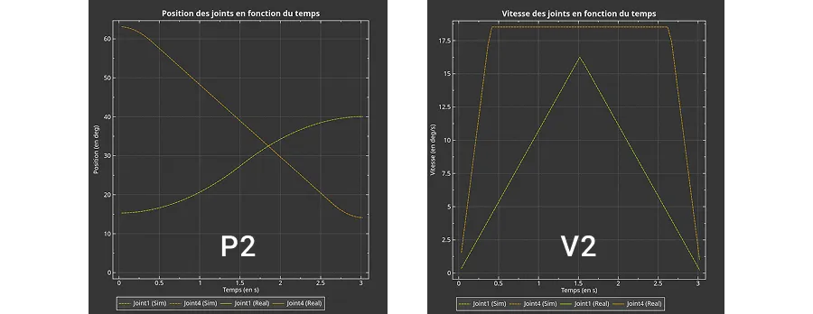

Conception d'un controlleur de mouvement
Au fil des années, j'ai appris à mieux organiser et structurer mon code. Ce projet m'a permis de concrétiser mes connaissances dans le langage C/C++. Je voulais que le robot bouge de manière similaire à un robot industriel, de sorte que tous les moteurs arrivent en même temps à une destination. De plus, je voulais approximer un mouvement linéaire de la pince (voir média à droite).
Le but était de réaliser un contrôle de mouvement simple à l'aide de quelques concepts mathématiques tels que la trigonométrie, les matrices et les équations de mouvement (de base).
La cinématique avant (foward kinematics) est un processus qui permet de trouver la position et l'orientation de la pince à partir des angles de chaque joints du robot. On peut aussi réaliser le processus inverse avec la cinématique inverse (inverse kinematics). J'utilise la trigonométrie et un peu d'algèbre linéaire pour réaliser les calculs. Pour l'implémentation en code, j'ai décidé d'utiliser la librairie Eigen pour effectuer les opérations avec les matrices (translation, rotation, etc.).
Les moteurs du robots tournent avec une vitesse qui varie dans le temps selon une forme de trapèze. Ce type de mouvement peut être décomposé en trois phase:
Que se passe-t-il s'il y a plus de 1 moteur ?
Pour contrôler plus de 1 moteur en même temps, il faut considérer que le but est de s'assurer que tous les moteurs partent au même instant et arrivent à leur destination en même temps. J'ai imposé des vitesses maximales et des accélérations maximales abstraites différentes pour chaque moteur, ce qui veut dire que certains moteurs sont plus lents que d'autres selon les déplacements requis pour arriver à destination.
Il faut commencer par trouver le temps maximal, qui correspond au moteur le plus lent. Cela veut dire que la vitesse trapézoïdale est calculée pour chaque moteur afin de trouver le temps maximal. Ensuite, les trajectoires de chaque moteur plus rapide que celui ayant le temps maximal sont recalculées (les vitesses sont diminuées) en fonction de ce temps.
Cet effet peut être remarqué dans les 4 graphes ci-dessus. Le tracé orange de position du graphique P1 et P2 a le même déplacement. Cependant, le graphe P2 présente un deuxième tracé (jaune) provenant d'un moteur plus lent. Ceci cause le tracé orange de vitesse du graphique V2 à atteindre une vitesse constante inférieure à celle du tracé de V1 (voir graduation de l'axe Y).
Pour arriver à faire bouger la pince du robot en ligne droite ou de la faire tourner autour d'un point fixe, on peut subdiviser la trajectoire en plusieurs points, tel illustré ci-dessus. À chacun de ces points, il faut calculer les angles des joints (moteurs) avec la cinématique inverse. Cela permet de savoir les déplacements angulaires des moteurs entre chaque point.
Pour l'instant, j'ai choisi d'approximer le mouvement en faisant bouger les moteurs à vitesse constante entre les points. Ce n'est pas une solution optimale, car le mouvement n'est pas fluide, ce qui cause des vibrations et des « coup » lors du départ et de l'arrivée. Je suis obligé de garder la vitesse basse pour ces mouvements.
Présentement, le programme embarqué sur le robot est limité quant à sa fonctionnalité. Entre autres, je ne tiens pas compte de la dynamique du robot, c'est-à-dire que l'inertie des pièces ainsi que les couples appliqués aux moteurs ne sont pas calculés. De plus, le système n'est pas à boucle fermée (je fais la lecture des encodeurs absolus seulement lorsque le robot est immobile).
Je planifie implémenter une commande prédictive en créant un modèle mathématique de la dynamique du robot. Ce sera un système capable de s'adapter en temps réel.